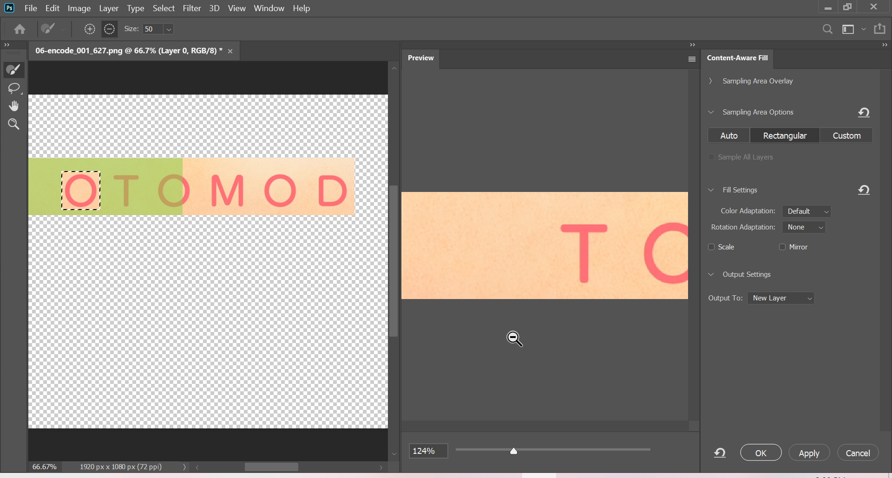

Image Processing in PS
Procedure
Before we start, note that we will be doing all the grunt work in PS while keeping AI usage to bare minimum. If you are familiar with editing in PS, you can skip this part and proceed to Image Tracing in AI. If not, continue reading this guide where I will show few essential tools to get you to speed but for in depth editing and all the tools in PS, refer tutorials online.
So on one fine day I was doing Fruits Basket Final Ep.06 and suddenly I came across this abomination, so I, the typesetting warrior who has taken a vow to eliminate all Japanese in video, decided to mask this.
 Raw Image
Raw Image
If you look at the image carefully you will notice that there is a gradient radially and also some sort of grain. Masking this in Aegisub is a challenging and quite difficult, so if you come across such masks you can opt this method.
Open the image in PS (drag and drop it). It will look something like this.
 Photoshop window
Photoshop window
Before we start our magic, we need to remove the unnecessary part, otherwise your script will be 100 MB. Select the Rectangular Marquee tool1 which is the second icon on the left side panel.
 Rectangular Marquee tool
Rectangular Marquee tool
Draw a rectangle of what you want to mask, right click on the region, and select Select Inverse. I drew something like this.
 Select the area and inverse the selection
Select the area and inverse the selection
After that, select Eraser tool which is 12th icon from the top.
 Eraser tool
Eraser tool
By holding the button you will get even more options. Now, select the Erase Tool.
 Extra Eraser options
Extra Eraser options
After selecting, press the right mouse button on the image. You should see a pop up where you increase the Size parameter to the maximum.
 Eraser size
Eraser size
Now select the Eraser tool again, but this time use the Background Eraser and do the same thing as above.
 Background Eraser
Background Eraser
If you haven’t messed up you should be seeing something like this.
 Clean BG image
Clean BG image
Now we can start masking. Select the Rectangular Marquee tool around letter O and select Edit->Content-Aware Fill.2
 Fill
Fill
You should see a pop-up like below and click on OK.
 Fill options
Afterwards, you should see a good mask. If the mask is not to your linking, redo the previous step and mess with the Sampling Area Options until you are satisfied with the result.
 Masking
Masking
There is something to keep in mind: This will create a new layer by default but you can change that option. Regardless, make sure you are working on the correct layer.
Follow the above steps until you yeeted all the Japanese.
Once you are satisfied, save this file as .png.
This was my final result, which looks pretty good.
 Final Image
Final Image
That is all for PS part. Now we can continue with AI.
There are various another tools such as Lasso Tool, Polygonal Lasso Tool .etc to draw free hand areas. 2: You can hotkey this.